One night above the clouds, landing at Narita in the evening
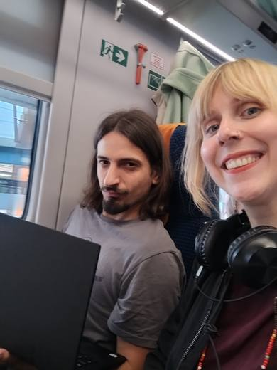

Kabukichō neon, Golden Gai, gardens, shrines, Harajuku and teamLab


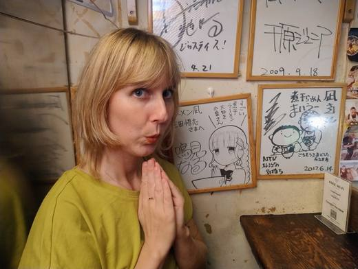
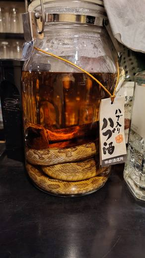
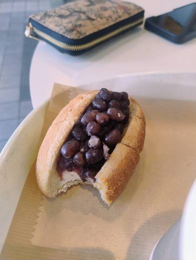

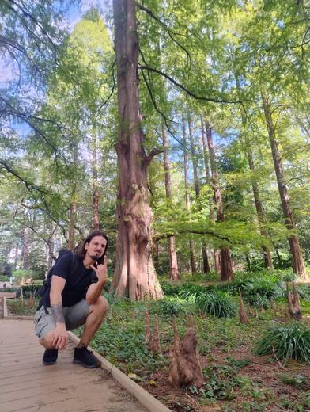
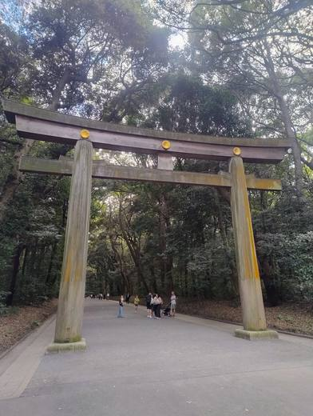
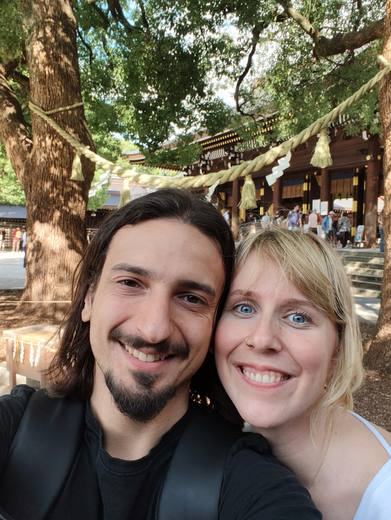
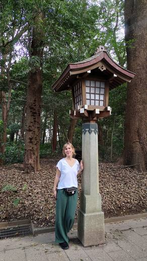
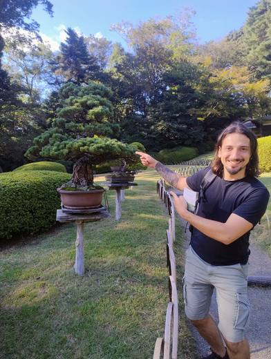
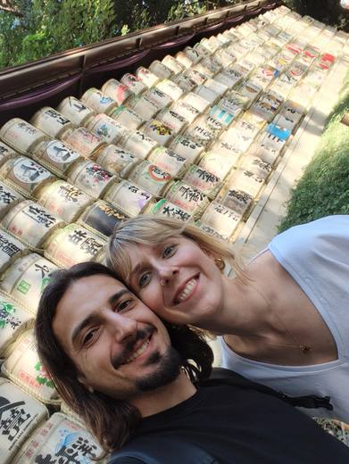
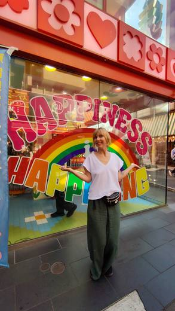
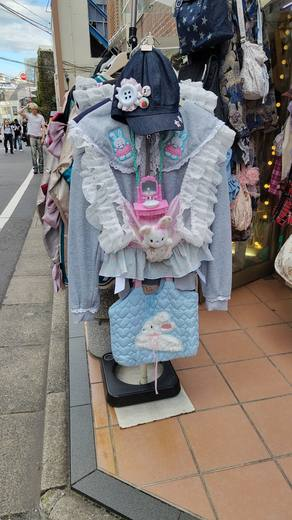
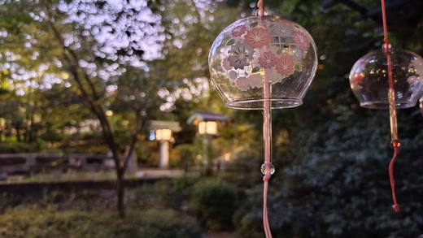
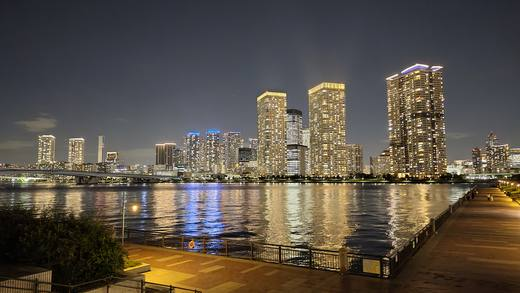
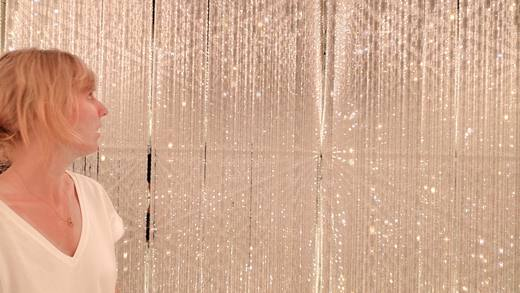

First hike: Tokyo's own mountain, 599 m — then a night in the arcades
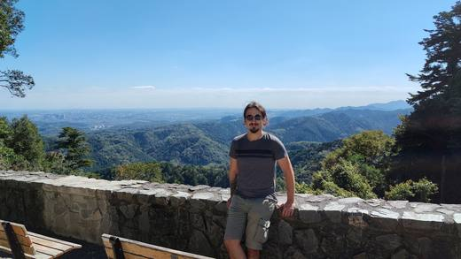


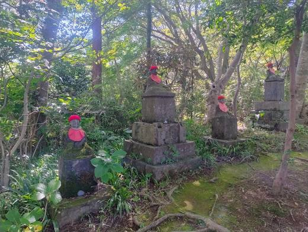

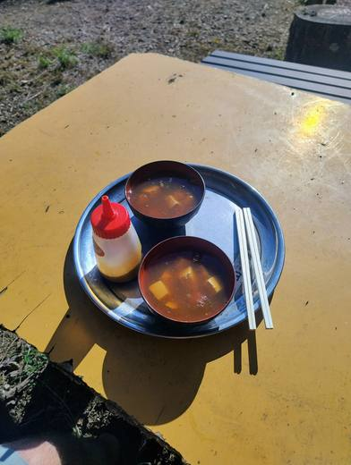
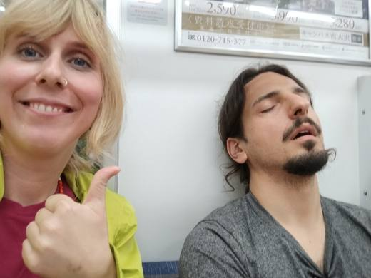
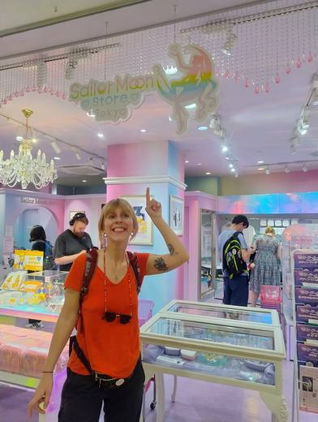
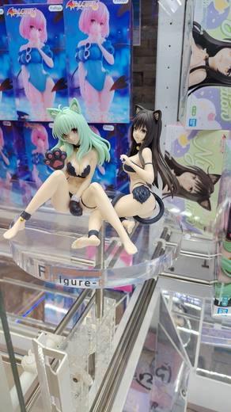

A typhoon-delayed train, a 97 m waterfall and gold-leaf shrines

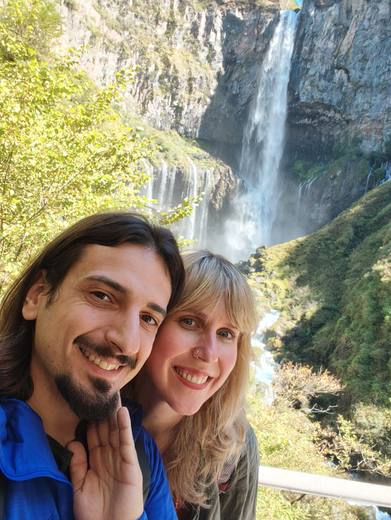
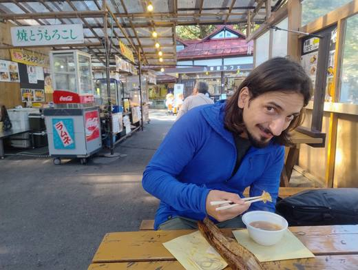


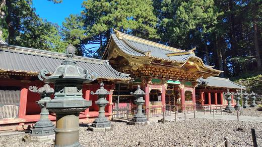
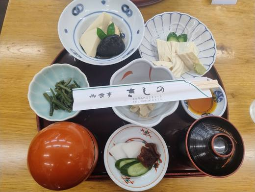
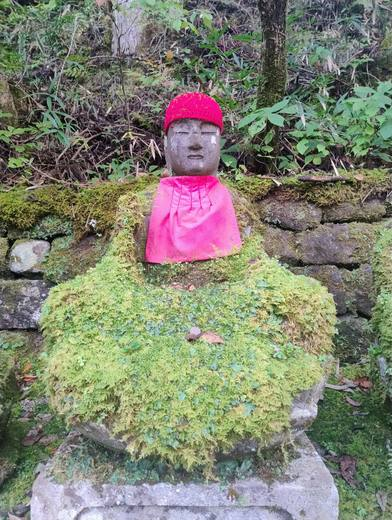
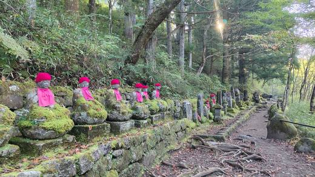

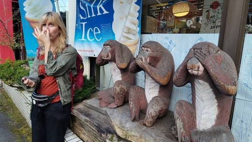
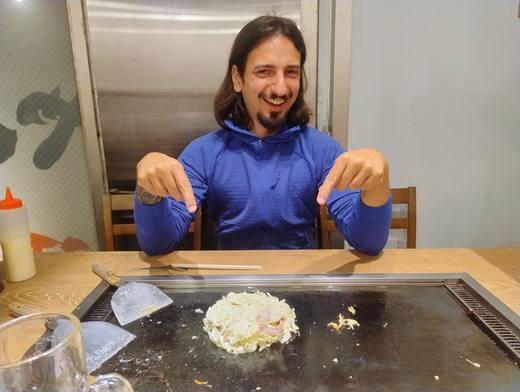
Sports Day holiday: a granite gorge, a ropeway and the first glimpse of Fuji
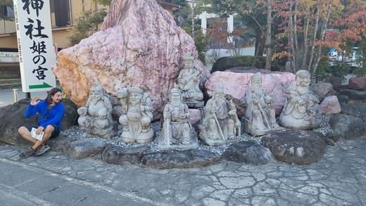


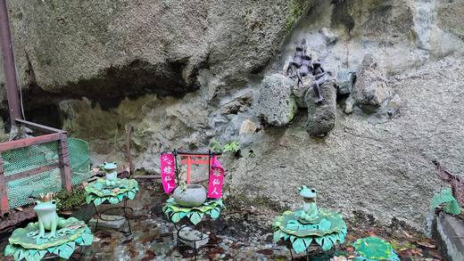

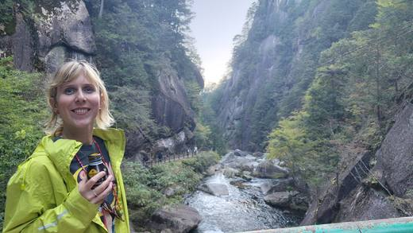
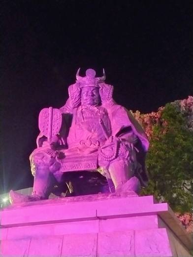
Six days hut to hut over Hōō Sanzan and Shirane Sanzan — up to 3,193 m
Southern Alps, hut to hut
13–18 Oct · Hōō Sanzan → Kitadake → Ainodake · on foot the whole way

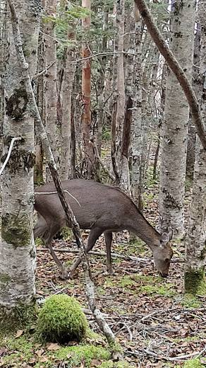


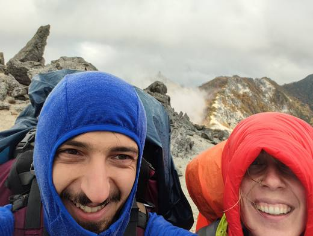
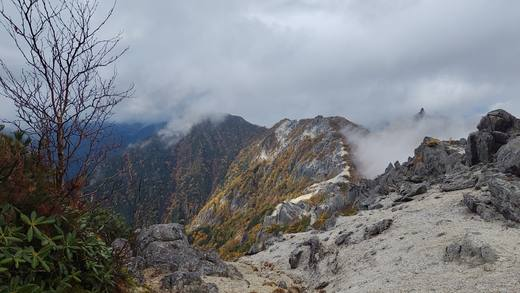
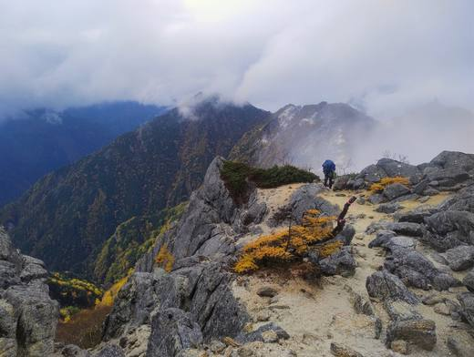
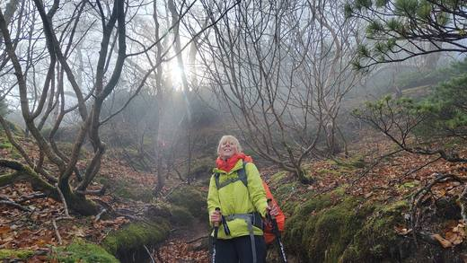
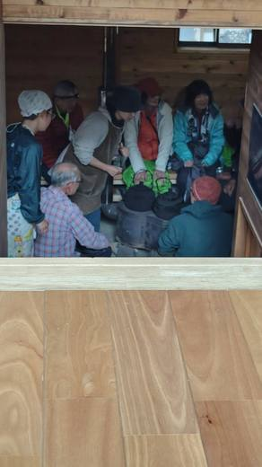
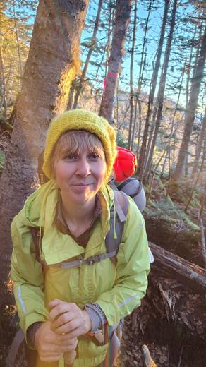
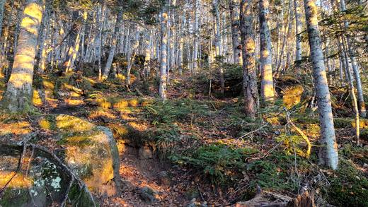
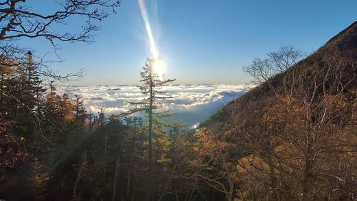
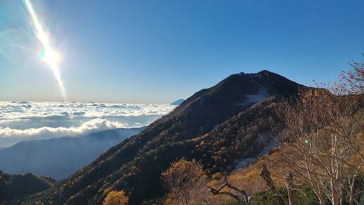

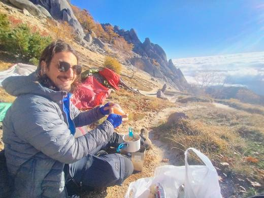
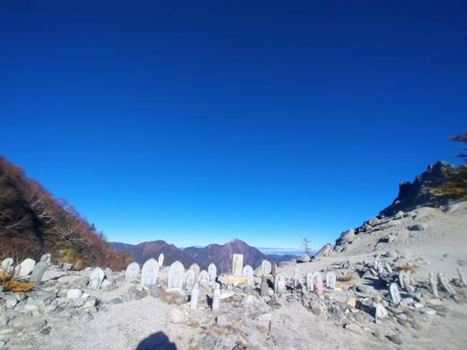
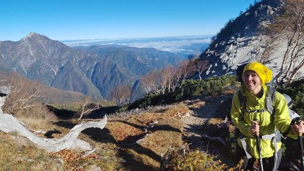

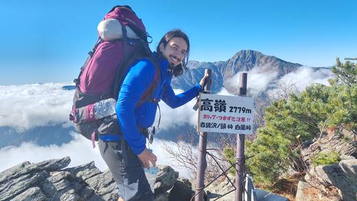
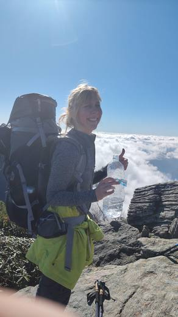
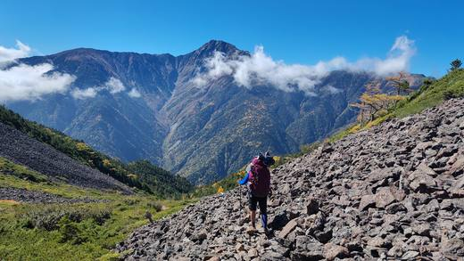
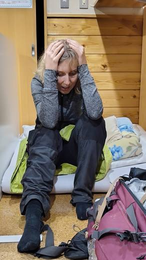


Out of the mountains by bus, bus, bus and train — then Gion at dusk

Two rented bikes, one tent, and the old road that carried salted mackerel 18 ri to Kyoto
Day 1 on the bikes
Tue 20 Oct · Kyoto → Kutsuki


Day 2 on the bikes
Wed 21 Oct · Kutsuki → Obama


Cliffs, islands and lighthouses along the coast road to Wakasa Wada
Day 3 on the bikes
Thu 22 Oct · Obama → Wakasa Wada


Tunnels through the hills to a village of thatched roofs
Day 4 on the bikes
Fri 23 Oct · Wakasa Wada → Miyama


Rain in the valleys, a last campsite, and a festival full of lantern floats
Day 5 on the bikes
Sat 24 Oct · Miyama → Kameoka


Bikes back by train — then torii, yōkai, beer and a castle in the rain


With Typhoon Champi around, the island plan became an old house on Tokyo Bay


A last walk through Tokyo, an overnight flight, and Warsaw at 06:15


How high we went
Every photo with GPS, by altitude — four days higher than anywhere in Poland
624 photos, day by day
Coloured by how we got around that day — plus 23 videos
Ground covered
Kilometres in Japan by how we moved